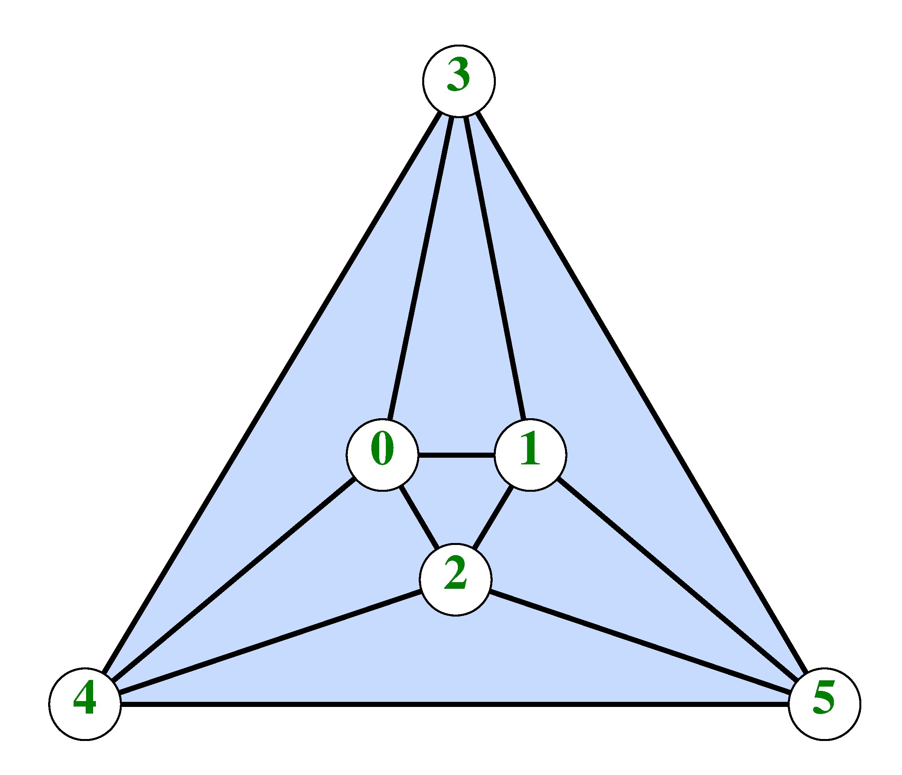
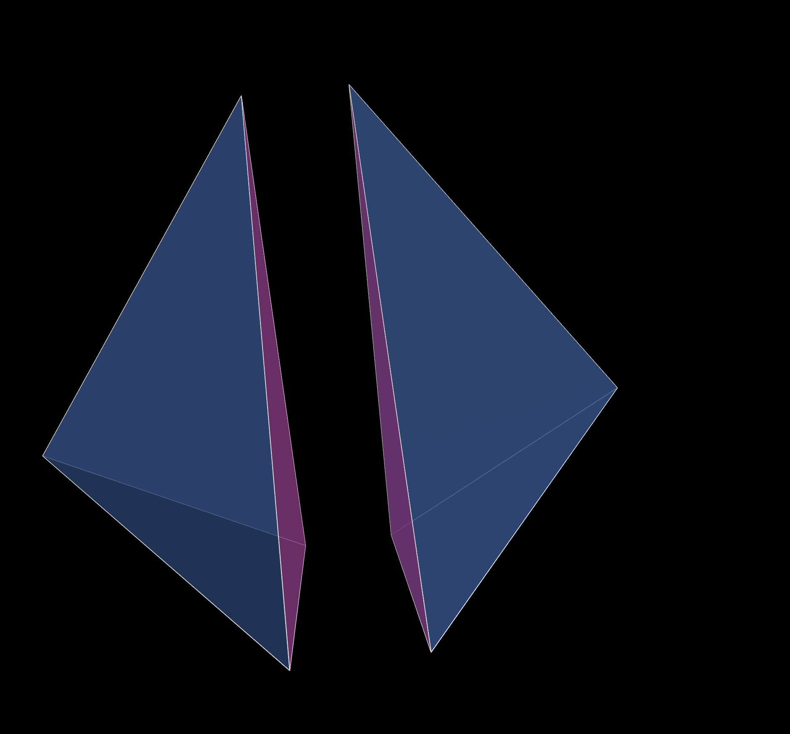
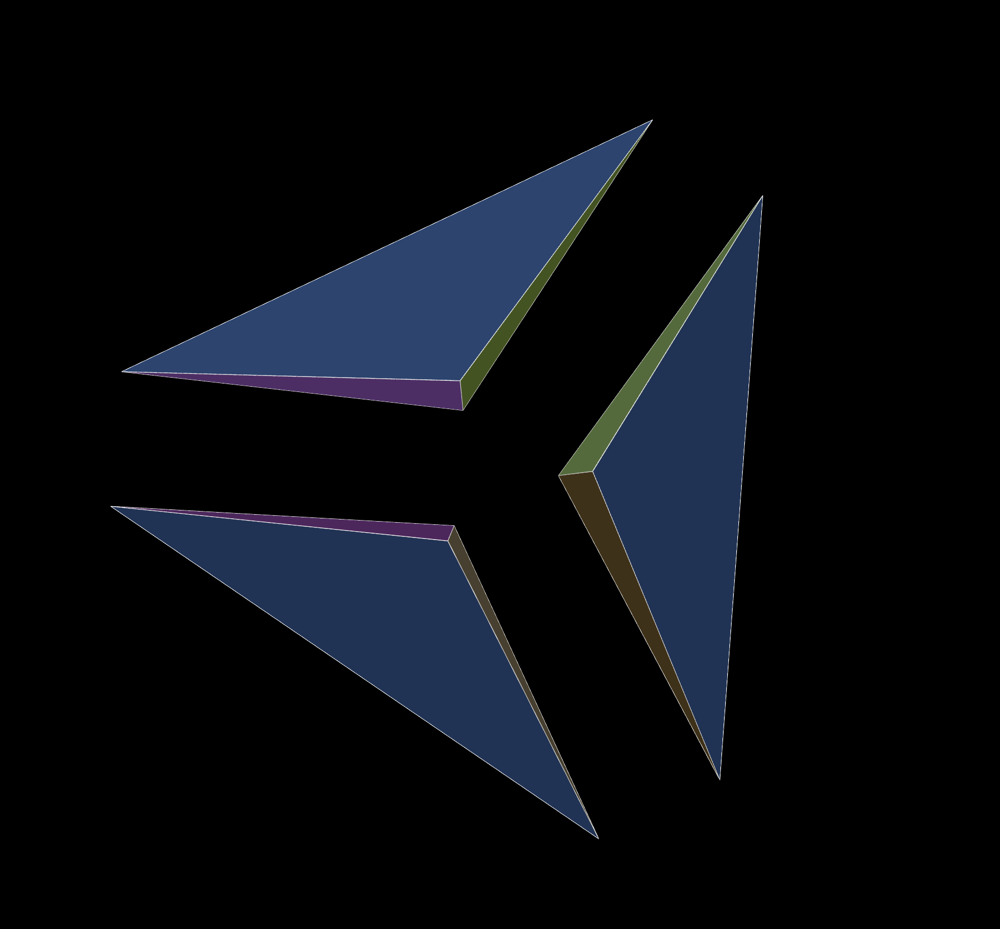
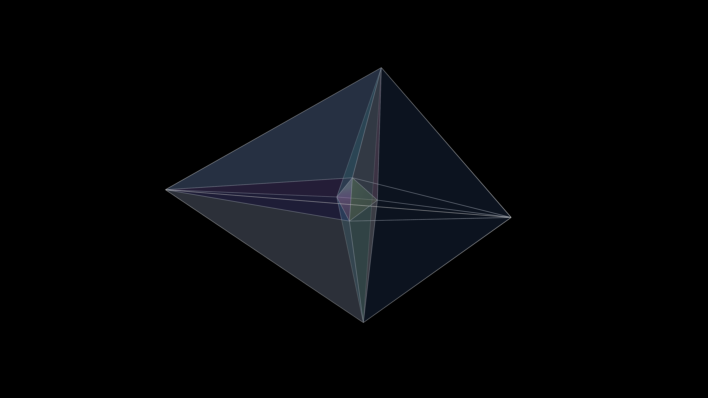
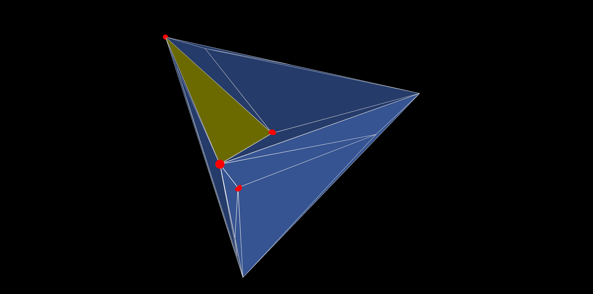
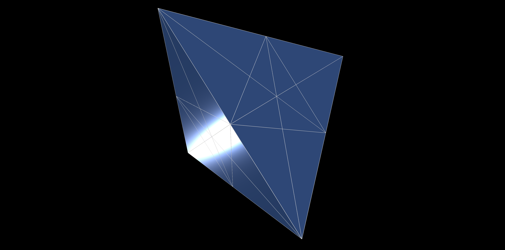

The original purpose of this project was to visualize Rudin's 1958 example of an unshellable tetrahedral decomposition. However, the software can be used to visualize in various ways any
We start by describing the relevant concepts in two dimensions, where they can be easily visualized. The generalization to three dimensions will then be straightforward.
A set $\Delta$ of triangles in the plane is called a triangulation provided that:

The second requirement means that the union of the triangles can be continuously deformed into a circle and its interior. The significance of that requirement is that there are no holes, disjoint pieces, or pinch points. This definition is common in applied mathematics; in pure mathematics, the concept of a triangulation is much more general.
It turns out that any triangulation is shellable. This means that it can be built one triangle at a time, starting with one triangle, and at each stage joining the new triangle to the growing triangulation at precisely one or two edges, maintaining a triangulation throughout the process. The process is called shelling, a triangle being joined along just one edge is called a flap, and a triangle being joined along two edges is called a fill.
An example of a triangulation, known as the
A major property of triangulations is the fact that the numbers of various quantities of facets (vertices, edges, and triangles) satisfy certain identities known as the
$$ V_B = E_B, \quad E_I = 3V_I + V_B -3, \quad \hbox{and} \quad N =2V_I + V_B -2.$$
This can be seen easily by using induction and shelling.⇧
The concept of a triangulation of a polygon can be easily transferred to the concept of a
Perhaps surprisingly (it was a surprise to me when I first learned about it), when moving from triangulations to tetrahedral decompositions, we lose two major properties:
However, let's first look at the issue of the greater complexity of the combinatorics. Consider the example of a bipyramid which is obtained by gluing one tetrahedron to another along one common face, as shown in Figure 2. However, the bipyramid can also be decomposed into three tetrahedra, without introducing additional vertices, by drawing the line from the north to the south pole and partitioning the bipyramid like an orange, as shown in Figure 3. (This kind of partition is in fact called an
 |
 |
| Fig. 2: Bipyramid partitioned into two tetrahedra. |
Fig. 3: Bipyramid partitioned into three tetrahedra. |
A somewhat more complex example is provided by a cube, which can be partitioned into an orange with six segments, or a more complicated configuration with five tetrahedra. Both partitions can be examined within the software.⇧
To get a better sense of the utility of this software, consider a slightly more complicated decomposition. To show some of the visualization facilities of the software, consider the three-dimensional version of the Morgan-Scott split. Thus, we have a small tetrahedron in the center of a large tetrahedron, and the space between the two is filled with fourteen more tetrahedra, for a total of 15 subtetrahedra. The configuration is shown in Figure 4. The tetrahedra are rendered semi-transparent so that the interior of the decomposition is visible.
 |
| Fig. 4: The Morgan-Scott Split |
It is notoriously difficult to understand a three-dimensional structure by looking at a stationary 2-dimensional projection. It may help to see an animation showing the structure from different angles, with different separations, and different levels of opacity. Click on the picture to see just such an animation. The effects shown in the video can also be obtained interactively, as described below (and the music can be turned off, or you can replace it with your own).⇧
The original impetus for developing this software was to visualize Mary Ellen Rudin's ingenious and famous 1958 example of an unshellable tetrahedral decomposition. That decomposition played a significant role in my research. Rudin decomposes a tetrahedron \(T\) into 41 subtetrahedra, all of which have all of their 14 vertices on the boundary of \(T\). The decomposition is unshellable because no matter which tetrahedron you decide to place last, it will have one vertex in the interior of at least one face of $T$, and no other vertices on that face. Thus, removing the tetrahedron will create a
 |
| Fig. 5: Rudin's Unshellable Configuration. |
Figure 5 shows a static view of Rudin's example. All tetrahedra are shown in blue, except one which is shown in yellow with its vertices marked by red balls. As shown in the figure, the base of the yellow tetrahedron is contained in one face, and the remaining vertex (marked by the bottommost red ball in the picture) is in the interior of another face of $T$. This happens no matter which tetrahedron you pick. Indeed, it could be worse; there are four tetrahedra in the decomposition that have one vertex in each of the four faces of the overall tetrahedron. Again, by clicking on the Figure you can see an animation of Rudin's example.⇧
One application of tetrahedral decomposition is the construction of spline spaces for use in applications. Of particular interest are so-called
The Clough-Tocher and Morgan-Scott splits are examples of such macro elements. The most extreme case, however, is a split of a tetrahedron into as many as 504 microtetrahedra, obtained by Schumaker, Sorokina, and Worsey. It makes it possible to use a piecewise quadratic function that is $C^1$ continuous (once differentiable).
 |
| Fig. 6: The SSW Split |
The split is illustrated in Figure 6. Again, you can see a static screenshot, and clicking on the image will show you an animation.⇧
This software lets you display and examine a collection of tetrahedra in three-dimensional space. Usually, the tetrahedra will form a tetrahedral decomposition of a polyhedron, but there is no restriction on their arrangement. They can overlap, be disjoint, form cavities, etc. There are several configurations that are built into the software, and that are readily available. However, you can define your own set of tetrahedra by creating and uploading a suitable file as described below.
All the (JavaScript) software is contained in the file tets.html. There are also a number of supportive files providing Figures and sample data files, for example. In that sense, the software is open source, and access is free. You are welcome to modify the software and use it for your own purposes provided you do not use it for commercial purposes, and you acknowledge its source in any web sites or publications of your own.
This User's Guide follows what you see on the screen, starting with the startup screen and then working sequentially through the available controls.⇧
When you first load the software, for example, by clicking right here, you'll see Rudin's triangulation moving in space, expanding and contracting, and changing its opacity periodically. In the upper left corner of the screen are listed some keyboard commands that you can use to obtain the kind of working setup you like. In particular, your options include:
I anticipate that usually you will want to turn on the control column using w or x, and go from there. But you can also type f followed by c and lose yourself in a mesmerizing screensaver display!
For reference, here is a list of the remaining available keyboard commands:
The graphics display can be manipulated with the mouse. Left-drag to rotate it and view it from any angle. Middle-drag, or use your mouse wheel, to zoom in or out. Right-drag to move (translate) the display. Clicking with the left mouse button has various effects described elsewhere.
The remainder of this manual works from top to bottom through the controls available in the Column to the left of the graphics display. If that column is invisible, you can make it visible by using the keyboard command x or X.
The information here will make more sense if you can keep another window open where you can see the controls and perhaps try their effects. To open such a window in a new tab click here. However, if the software is unavailable for some reason, or if you prefer, you can open a screenshot in a new tab by clicking here. You will see the control column on the left, and a colorful rendering of an icosahedron on the right.⇧
The first row of the control column contains the name of the software (Tetrahedra) and the current version number. As of this writing, the version number is 9.0.⇧
The second row of the control column contains a button that opens this documentation page in a new Tab. You can accomplish the same effect with the keyboard commands m or M.⇧
The remaining items form groups of controls labeled with a two-letter code at the left. Each of those groups contains one or more rows. If you hover over any of those groups, a popup window will give you a brief description of the purpose of that group.
The first such group is labeled CS. It lets you select the set of tetrahedra that you wish to display. You can use either one of the built-in configurations or import your own.⇧
Below is a Table of the available built-in configurations. The columns contain the name of the configuration, the number $V$ of vertices, the number $N$ of tetrahedra, and links to a stationary image, a (silent) animation video, and a spreadsheet with detailed combinatorics of the configuration. You can start the software, make sure the control panel is available, and use the menu in the first row of the CS block to select the configuration for examination.
You can examine whatever collection of tetrahedra you like by creating and importing a file with the extension .tri. That file needs to contain the following (and no other) data:
For example, the built-in split of a bipyramid into three segments could also be described by a file with these contents:
5 3
0 0 0
-2 -2 1
-2 1 -2
1 -2 -2
-2 -2 -2
0 1 2 4
0 2 3 4
0 3 1 4
That precise file is actually available in the same directory as this web page; it is called bp3.tri. The button labeled Load tri File in the second row of the CS block enters your browser's file selection procedure and lets you upload the file. The button labeled Combinatorics next to the load button will upload a spreadsheet describing the combinatorics of the current configuration. For an example, click on any button labeled Combinatorics in the above Table.⇧
The three buttons in this row let you choose certain options for the display:
The Menu in this section lets you select the effect of clicking on one of the centroid balls:
The controls in this block let you select certain facets (vertices, edges, faces, and tetrahedra) and cause various actions on them. The four menus in the first row let you select a specific facet. You can use the menus only sequentially, moving from left to right. Each menu lists only those vertices that are connected by an edge to a vertex chosen with one of the preceding menus. Thus you use the first two menus to select an edge, the first three to select a face, etc.
However, the button in the second row, showing the label Topological Mode or Simple Set Mode toggles the restriction on or off. With the restriction off you can select any set of 1, 2, 3, or 4 vertices, but you still need to work from left to right.
The remaining two rows contain buttons that determine what is to be done with the selected facet:
These controls let you draw a planar slice of the configuration with the cutting plane parallel to the screen. (After doing so you can rotate, translate, zoom, and animate the display of the slice as usual.) There are two modes: Pure Slice will draw just the slice, and Show Bg will draw the part of the configuration behind the slicing plane. The slider in the second row of this block defines the location of the slicing plane. At either end of that scale, the entire configuration is drawn, i.e., the slicing feature is off. You can use the keyboard commands s and S to move the slider smoothly through its domain, backward or forward, respectively.⇧
This menu lets you select the coloring mode for the triangular facets in your configuration. You have the following options:
You have these options:⇧
You can select the way edges are drawn. Edges can be drawn in white (the default) with a distinct color for each edge, or they can be made invisible.⇧
This slider lets you modify the thickness of the edges.⇧
This slider lets you explode the configuration, i.e., move all tetrahedra away from (or towards) the centroid of the bounding box. You can also use the keyboard commands e and E to reduce or increase the amount of the explosion smoothly.⇧
This slider lets you change the extent to which the tetrahedra are opaque or transparent. You can use the keyboard commands o and O to vary the opacity smoothly.⇧
The configuration is illuminated by ambient light and by three spotlights (direct light). The two sliders in these sections let you choose the amounts of each.⇧
You can animate the configuration, smoothly varying the camera position, explosion rate, and opacity, and you can create a video recording. There are several places on this page, in particular the Table of built-in configurations, that let you see examples. You can also add AI-generated music to your video. Specifically, the following controls are available:⇧
You have two options: the camera moves along a periodic orbit, or it follows a Lissajous, essentially a random, path. The random path is the default; it is particularly suitable for a video. The Lissajous option may be more informative or entertaining for interactive use.⇧
This block contains the following controls:
The last block in the control column gives you the option of adding a sound track to your video. The menu in this row lets you choose one of the built-in (AI-generated) sounds, the import button lets you upload an .mp3 file with your own sound track, and the Play button lets you listen to your selected sound without creating a video. The following table lists the available sound tracks, and there is a link for each sound that lets you play the track without going to the actual software.